![Nine-panel comic retelling the talk: a data detective with a magnifying glass over a map of India; a broom sweeping mangled place names out of PDFs; a treemap with Priya Krishna at ₹767 crore; cash growing from a handful to a roomful beside the Vidhana Soudha; AAP topping a criminal-cases chart beside protest placards; a TV anchor at a giant touchscreen with Anand waving behind; panels on a nine-vote win, a women-only contest, a 99-year-old candidate and the Doordarshi party's zeros; Faridabad as a bellwether and Modakurichi's 1,033 candidates; and a ballot with eleven Chandulal Sahus.](comic-page.avif)
A ballot you had to read
On 2 June 1996, a month after the rest of Tamil Nadu had voted, people in Modakurichi near Erode walked into their polling booths and were handed a book instead of a ballot paper. Barrels stood in for ballot boxes. The supply of election symbols ran so short that some candidates got “one pen”, “two pens” and “three pens”.TNIE 2026
The DMK candidate who won says her party's Rising Sun was on page 25.
Tamil Nadu Assembly constituencies, the way Anand walked through them on his animated map. Only 1,033 is confirmed by the Election Commission's FAQ, which also calls that ballot a “booklet”. The other three are as said in the talk and haven't been checked against the returns. Anand first said Perambalur had 18 candidates and then corrected himself to 10.
One seat, a thousand and thirty-three candidates. It's still the record. You'd expect a number like that to be a typo, a parsing bug or a duplicated table. It's real, though, and the reason for it is better than any error.
Anand didn't open with it. In February 2015 he saved it for the last two minutes of his TEDx talk and took the long way there: hundreds of PDFs, a pile of imaginary banknotes, a newsroom touchscreen and a party that never won. This story takes the same road. The talk plays beside the story, and tapping any 00:05 time plays that moment.
Every election, ever
“What would we get if we had the results of every single election that we've ever had in India? … What would we learn about our democracy in action?”
The first answer was paperwork. The Election Commission publishes its results, but as PDFs, and Anand's team at Gramener had hundreds of them to turn into a single table. “Firstly, the data is not particularly easy to get,” he said 00:16.
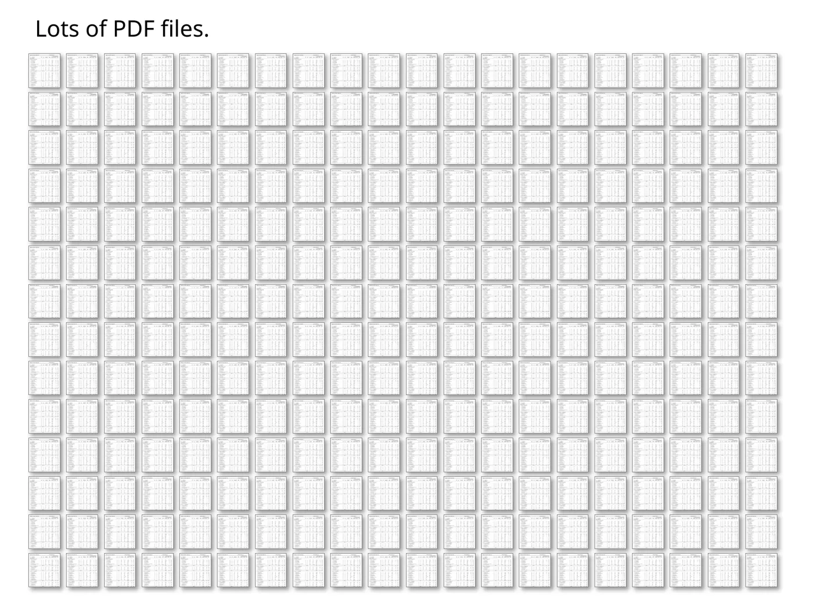
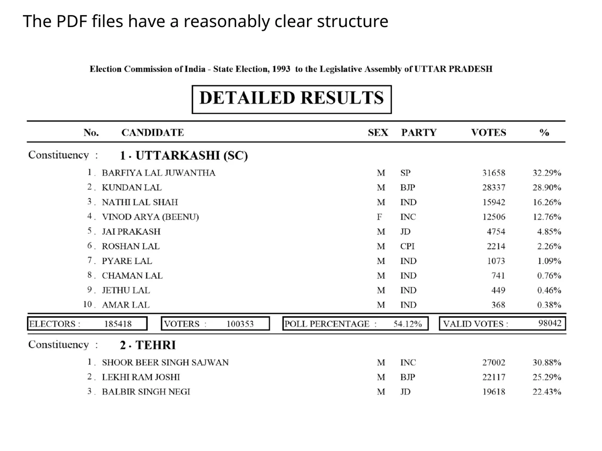
Parsing gave them structure, but not consistency. The same constituency could be spelled several different ways from one election to the next. To count anything across years, you have to decide which names are the same place. Try it with the actual clusters Anand's team faced.
Each row is a group of constituency spellings from the cleaning slide, with how many result rows used each spelling.
“It's hard to figure out if, when you say Chennur, it is the same as Chinnur or it's a completely different district. And it turns out that they are completely different.”

That's the point of the slide. A cleaning step can be wrong with more confidence than any typo. A misspelling is obvious to anyone reading. A wrong merge is invisible. It blends two places' histories into one tidy row that every later chart trusts. “After a fair bit of work,” Anand said 00:53, they cleaned this and several other datasets, “and said, let's see what we find.”
How much is ₹767 crore?
Once the data was clean, people started asking it questions. Ahead of the 2013 Karnataka Assembly election, the question was the obvious one: who are the richest? Gramener's answer ran in the Kannada daily Vijay Karnataka as a treemap.

“You'll notice one huge box out here. Right? So that's effectively one candidate whose wealth is more than pretty much all of the BJP put together.”
Then the paper asked what every editor asks about a big number: what does it look like?
“How much is 767 crores? … ‘You know, will it fill the entire Vidhana Soudha if I took it out as cash and placed it on the floor?’”
Climb from a handful to a building
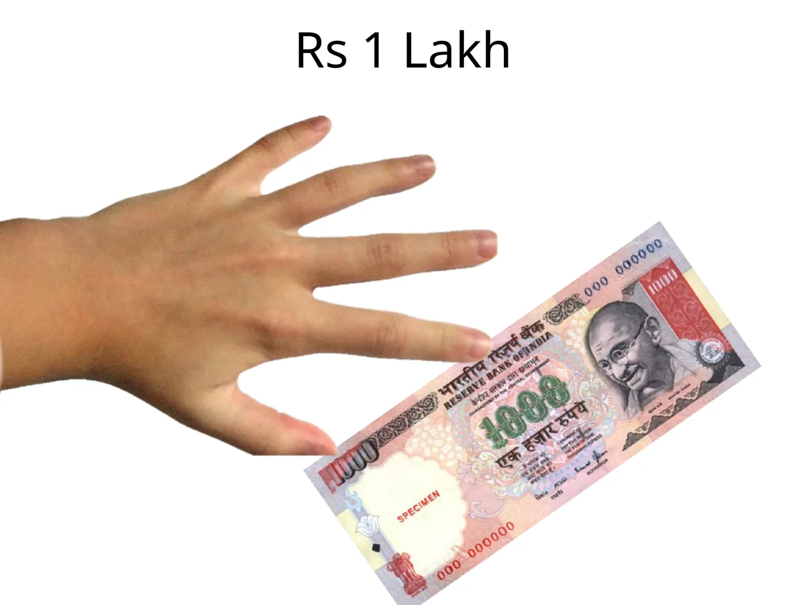
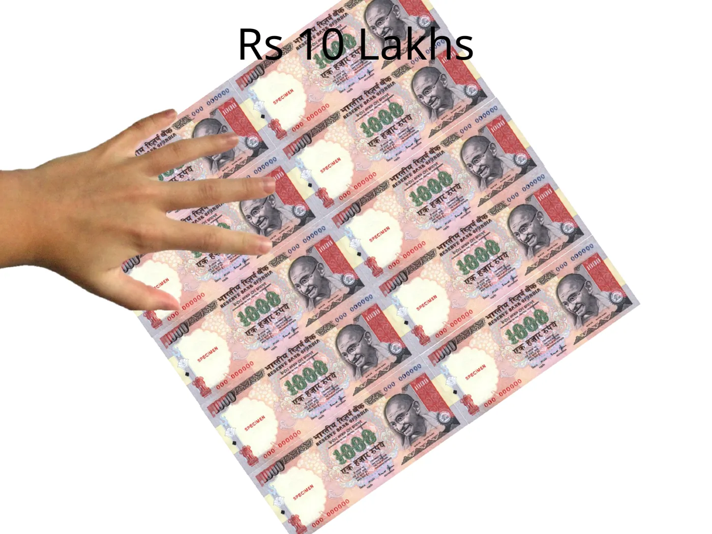
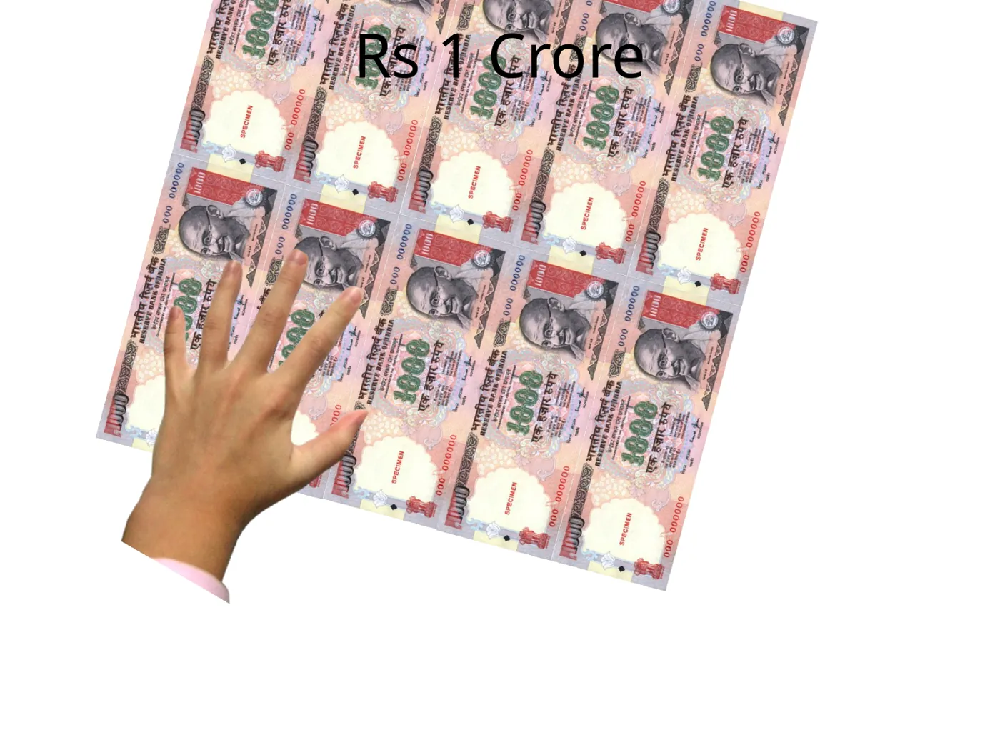
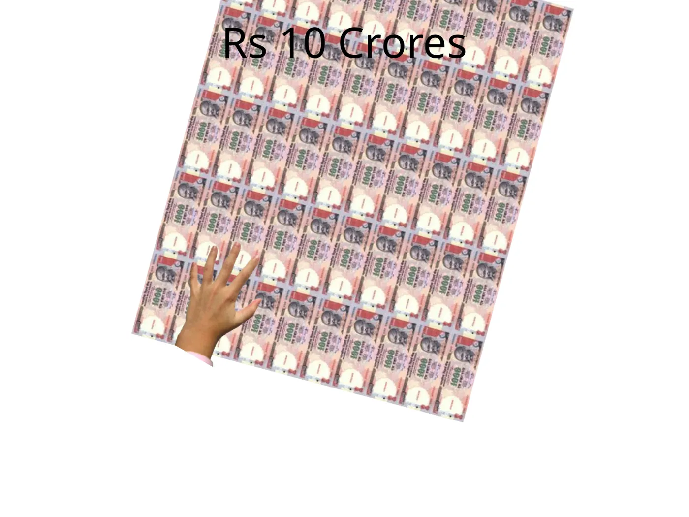
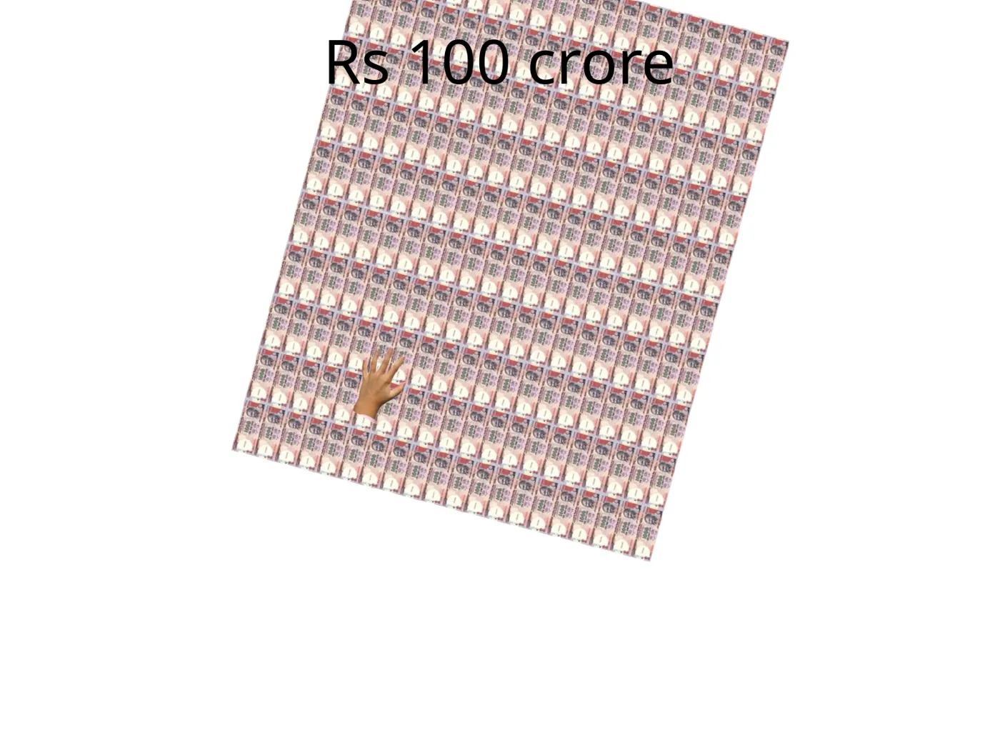
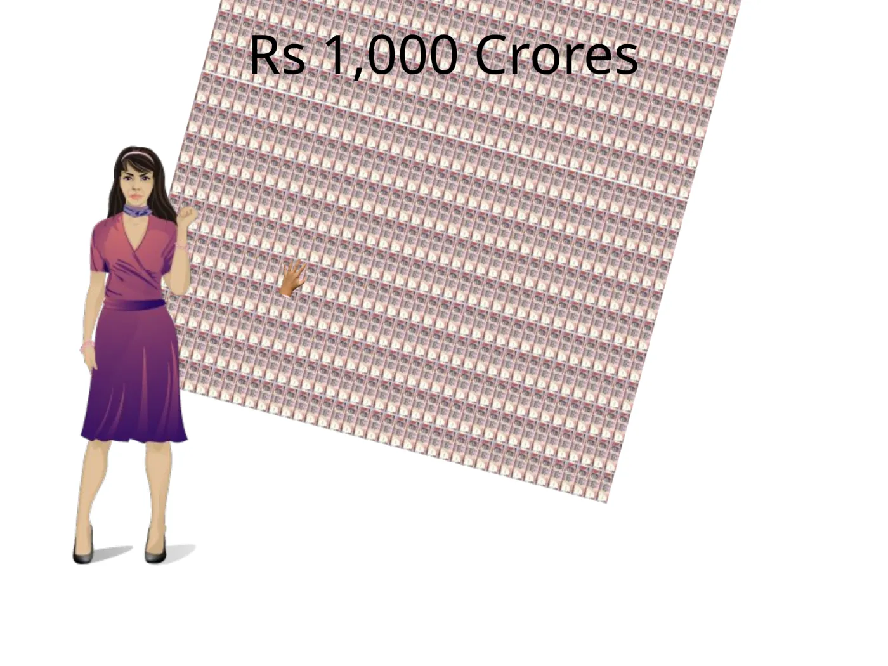
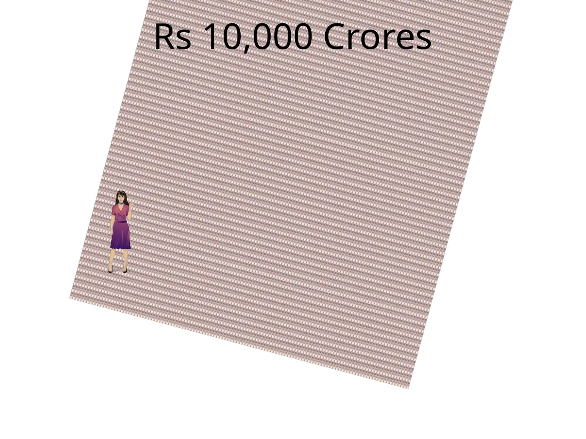
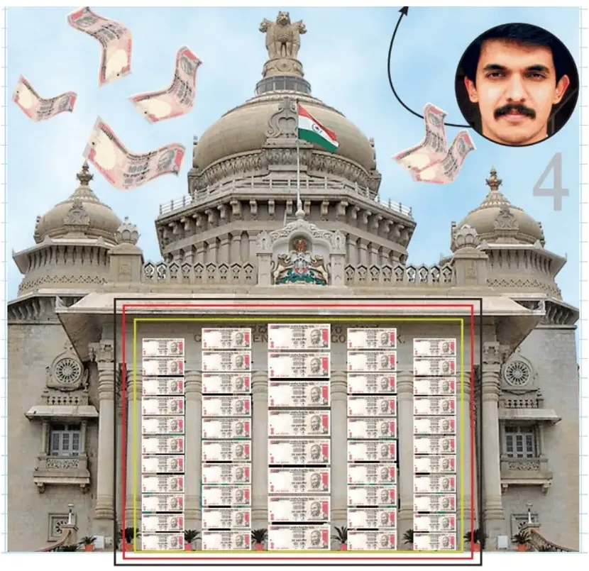
₹1 lakh
“If you take one lakh, that's something you can hold in your hand.” 01:55
Scale is logarithmic: each tick is ten times the last. The amber pin marks ₹767 crore. The slides draw ₹1,000 notes, a denomination withdrawn in November 2016.
Then came the awkward moment the editorial team had to face. The honest picture was smaller than the dramatic one.
“Now, at this point, we realized we have a problem because 767 crores is not even going to fill the Vidhana Soudha. It's not even going to fill a small room.”
They didn't inflate the number to fit the picture. They shrank the picture to fit the number: not the whole legislature, just its doorway. It's a small decision, and it's the one that counts in data journalism. When the metaphor and the measurement disagree, change the metaphor.
The next year, the question scaled up, and so did the problem. In the 2014 Lok Sabha election, the Congress candidate for Bangalore South, Infosys co-founder Nandan Nilekani, declared about ₹7,700 crore.NDTV 2014 On the national treemap he “crowded out the whole thing” 03:02.
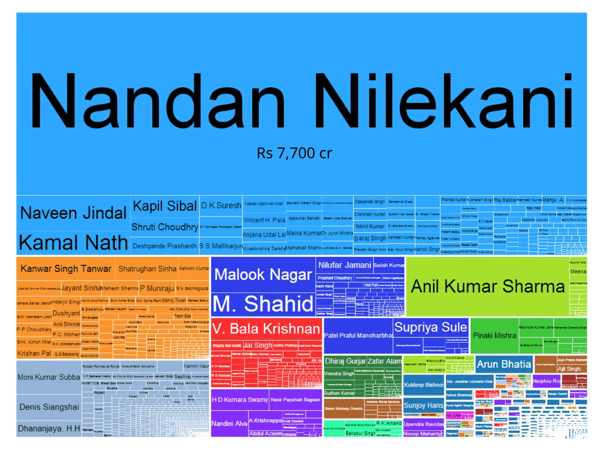
“He could buy the election out completely,” Anand joked 03:31. It got a laugh, and it's a joke, not a finding. Shares in a company you co-founded don't turn into votes.
The chart that looked like a verdict
Candidates' affidavits list more than assets. They also list pending criminal cases. So the team grouped the 2014 declarations by party, and the chart said something nobody expected.
“What we found was AAP was right there on top, the Aam Aadmi Party. Which made no sense whatsoever.”
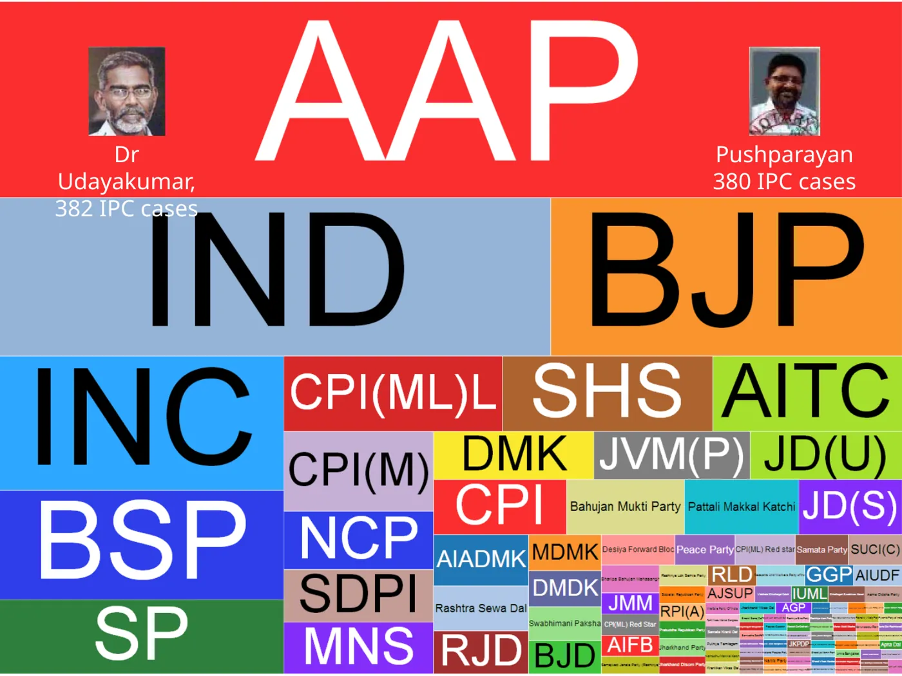
“Now, of course, these are activists, and it is their job to protest against various things and go to jail.”
He was half joking. He also said that the cases came under “somewhat serious IPC sections, but mostly for social agitation”. Both halves matter. A party total built from two people is really a fact about those two people. And a pile of filings is a different thing from a pile of crimes.
The anchor becomes an analyst
So far the team had been finding the stories themselves. The next step was bolder: give the data to someone live on air.
“The role of an anchor is normally to come out there and read a prepared script. Can we transform an anchor into an analyst who will take a call and, as these calls come through, answer the questions just by playing around with the data live?”

“That's me in the red T-shirt at the back making my first television appearance. And first thing that I did as soon as I got behind the screen was called home and said, ‘Look, turn on CNN-IBN, you'll see me.’”
The screen changed who could ask the questions. A script only answers what someone predicted viewers would want to know. A live screen lets the anchor answer whatever comes in next, and anchor Bhupendra Chaubey could do that on air 06:03. “The kinds of questions that came to them were bizarre,” Anand said 05:38.

Who won by the smallest margin ever? Two candidates, by nine votes each, “so if, for instance, their family had voted the other way, it would probably have made a difference” 05:42. Has anyone contested alone? Not since 1989 06:03. And the oldest candidate was 99: “what you would do if you won the election at the age of 99 is a tough question to answer” 06:47.
The party that never won
If there are winning parties, there might be a losing champion. “Which is the least successful party?” 07:00 The data had an answer most of the audience had never heard of: the Doordarshi Party.
Lok Sabha candidates fielded and seats won, as presented in the talk 07:21 and in Gramener's 2014 graphic for The Economic Times. That's 716 candidacies and no wins.
“There was only one party that was larger than them in terms of presence, and that was the Congress. So this is effectively the second largest party, and they won zero.”
“Largest” here means the number of candidates fielded, not votes. The slide puts the party ahead of the BSP (245), JD (244) and BJP (225) in 1989. Worse, Anand said, its candidates were never even runners-up 08:04. Then he offered a theory: its candidates “had to be teetotalers, non-smoking, vegetarian, bachelors, and I think celibate as well, I'm not sure” 08:14.

One more question went the other way: is there a constituency that always picks the winner? 08:36 Faridabad, in Haryana, had voted for the nationally leading party in every election since it was created.

This is a bellwether, not a lever. A streak shows that a seat has matched the winner. It doesn't show that the seat causes or predicts the result. Whether it's the only such seat depends on how you treat new constituencies and boundary changes.
Back to the booklet
With two minutes left, Anand asked the question this story opened with. “What is the largest number of people that ever stood for an election? … I'll show you the answer and you'll find it quite striking.” 09:40
He didn't just show the number. He played a map of Tamil Nadu's Assembly elections, one circle per constituency, each circle sized by its number of candidates, and stepped through the years. In 1967 Perambalur had about ten candidates 10:01. The 1977 map was busier, and in 1984 one circle had 90:
“So at this point, you're not looking at a ballot sheet; you're looking at a ballot booklet, right? You've got to flip pages to get there.”
In 1991 two seats had around 250 candidates each, a “mini book, half of the telephone directory, perhaps” 11:02. “But all of this pales in comparison with the 1996 elections where Modakurichi had 1,033 candidates.” 11:05

“Palanisamy C, Palanisamy C, Palanisamy C, Palanisamy C… How do you figure out which Palanisamy C you are if you're voting for yourself?”
1,033 candidates, one square each
A reconstruction, not the ballot: squares aren't in ballot order. The counts come from a 2016 DT Next retrospective. A 2021 interview gives 161 one-vote candidates instead of 158.
“There were as many as 88 candidates who got exactly zero votes. Probably because they couldn't find themselves or the Election Commission couldn't find them…”
That's a joke, and the room laughed. But think about what eighty-eight zeros means. Eighty-eight people filed nominations, had their names printed, and then didn't vote for themselves. Nobody who wants to win does that. So what did they want?
“We figured out finally why this happened. This was a farmers' protest.”
Not to win, but to be heard
The candidates weren't confused, and the data wasn't broken. Modakurichi's farmers had filed en masse on purpose, to make an election impossible to ignore. Their federation had a charter of demands that had gone unanswered: 33 of them by one later account, 32 by another. So they took the demands to the ballot itself. More than a thousand of them stood as independents.TNIE 2021 DT Next 2016
“Our goal was not to win but to be heard.”
It worked, at least as theatre. Polling was pushed back a month. Chief Election Commissioner T N Seshan came to Modakurichi and met them, and Nallasamy says Seshan called their reform demands just.TNIE 2026 The twist in those demands is the best part. One of them was to raise the candidate's deposit from ₹250 to ₹10,000 and to require ten proposers instead of one. The protesters were asking for the rule that would end their own protest. Another was a way to reject all the candidates.
Today an Assembly deposit is ₹10,000, and NOTA (“none of the above”) has been on Indian ballots since a 2013 Supreme Court ruling.ECI The 2021 account counts these as demands met. It doesn't show that Modakurichi caused either change, and both had wider histories of their own.
Even with the disagreements, the shape of the story holds. The strangest row in India's election data wasn't an error. It was the message. A cleaning script would have flagged it, and a careless analyst might have dropped it. A chart made it impossible to miss, and only asking “why?” made it mean anything.
Eleven Chandu Sahus
Anand wasn't done with confusing names. Lookalike names on a ballot, he said, had rarely happened before. Then in 2014 they turned up “in a fairly strong way” 12:04.
“You may have heard of the case of the 11 Chandulal Sahus that stood for elections in Mahasamund.”
![Table titled “Are duplicate candidate names common?” Columns: state, constituency, affected candidate, party, count. Rows: Chhattisgarh, Mahasamund, Chandu Lal Sahu, BJP, 11; Chhattisgarh, Bilaspur, Lakhan Lal Sahu, BJP, 5; Delhi, West Delhi, Jarnail Singh, AAP, 3; Madhya Pradesh, Rewa, Janardan Mishra, BJP, 2; Uttar Pradesh, Mathura, Hema Malini, BJP, 2; Haryana, Kurukshetra, Raj Kumar Saini, BJP, 2; Madhya Pradesh, Hoshangabad, Uday Pratap Singh, BJP, 2; Maharashtra, Osmanabad, Gaikwad Ravindra Vishwanath, Shiv Sena, 2; Haryana, Sonipat, Padam Singh, INLD, 2.](slides/slide-36.webp)
Contemporary reporting was more careful than the shorthand. The Hindustan Times said the BJP's sitting MP faced ten namesakes, five Chandulal Sahus and six Chanduram Sahus. The BJP alleged that Congress candidate Ajit Jogi had planted them, and Jogi brushed the allegation aside. The Indian Express reported the dummy-candidate claims too. Those are claims. Anand pointed at the column that suggested a pattern, and then stopped.
“In no place is Congress at a disadvantage. It's always some other party that seems to be suffering from it. I'm not making any conclusions from it… it's just an observation.”
In 2014, the candidates who faced namesakes in this table were from BJP, AAP, Shiv Sena and INLD, and none were from Congress. The chart can show that.
That needs what the table doesn't hold: who filed, who paid, whether voters were confused, and how many votes the namesakes actually took.
That needs evidence of intent. A chart can't supply it, and Anand, to his credit, didn't claim it.
Play around with data
The talk doesn't end on the accusation it avoided. The transcript this page started from stops at the namesakes, but the recording runs on for ten more seconds:
“Who would have thought that statistics can actually be as much fun, or perhaps even more, than politics? … Play around with data. You might find something interesting.”
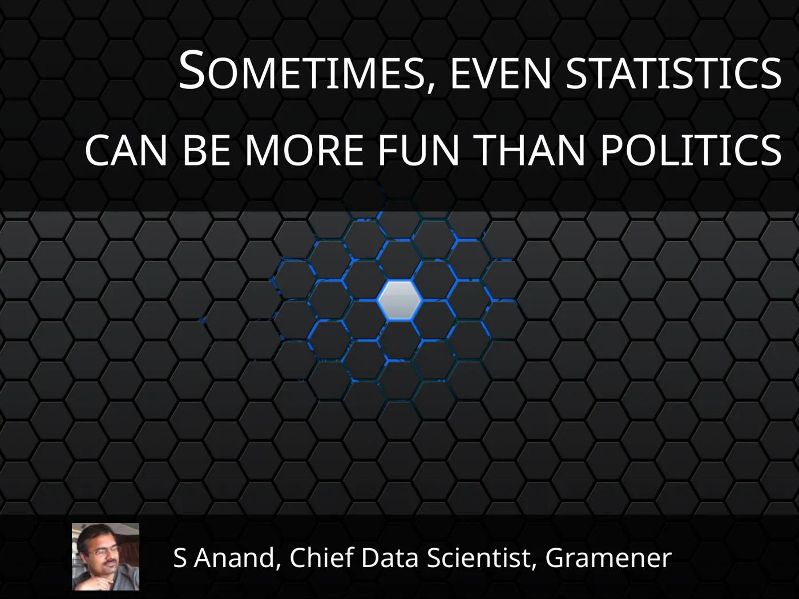
It's a light ending to a talk that's lighter than its material. Underneath the jokes, though, every story in it followed the same steps. Someone cleaned the data, asked a question, chose a picture, hit something odd, and looked again before deciding what it meant.
The two big anomalies in this talk point in opposite directions. Modakurichi looked like a data error and turned out to be a protest. Mahasamund looked like a pattern and could easily have been turned into an accusation. Neither could be read off the chart. The habit worth keeping is a question to ask before you delete, merge or headline the outlier: what human decision could explain the strangest row in your spreadsheet?